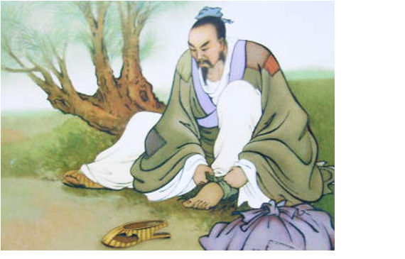

The Ancient Art of the Numerati
Chapters
1: Introduction
2: Recommendation systems
3: Item-based filtering
4: Classification
5: More on classification
6: Naïve Bayes
7: Unstructured text
8: Clustering
Attributions

A guide to practical data mining, collective intelligence, and building recommendation systems by Ron Zacharski. This work is licensed under a Creative Commons Attribution-NonCommercial 4.0 International License.It is available as a free download under a Creative Commons license. You are free to share the book, translate it, or remix it.
About the book
Before you is a tool for learning basic data mining techniques. Most data mining textbooks focus on providing a theoretical foundation for data mining, and as result, may seem notoriously difficult to understand. Don’t get me wrong, the information in those books is extremely important. However, if you are a programmer interested in learning a bit about data mining you might be interested in a beginner’s hands-on guide as a first step. That’s what this book provides. This guide follows a learn-by-doing approach. Instead of passively reading the book, I encourage you to work through the exercises and experiment with the Python code I provide. I hope you will be actively involved in trying out and programming data mining techniques. The textbook is laid out as a series of small steps that build on each other until, by the time you complete the book, you have laid the foundation for understanding data mining techniques.
Table of Contents
This book’s contents are freely available as PDF files. When you click on a chapter title below, you will be taken to a webpage for that chapter. That page contains links for the PDF, the Python code used for the chapter as well as the chapter’s sample data sets. Please let me know if you see an error in the book, if some part of the book is confusing, or if you have some other comment. I will use these to revise the chapters.
Download the entire book
You can also download the book as one large (~150MB) pdf and all the source code at https://github.com/zacharski/pg2dm-python.
Chapter 1 Introduction
Finding out what data mining is and what problems it solves. What will you be able to do when you finish this book.
Chapter 2: Get Started with Recommendation Systems
Introduction to social filtering. Basic distance measures including Manhattan distance, Euclidean distance, and Minkowski distance. Pearson Correlation Coefficient. Implementing a basic algorithm in Python.
Chapter 3: Implicit ratings and item-based filtering
A discussion of the types of user ratings we can use. Users can explicitly give ratings (thumbs up, thumbs down, 5 stars, or whatever) or they can rate products implicitly–if they buy an mp3 from Amazon, we can view that purchase as a ‘like’ rating.
Chapter 4: Classification
In previous chapters we used people’s ratings of products to make recommendations. Now we turn to using attributes of the products themselves to make recommendations. This approach is used by Pandora among others.
Chapter 5: Further Explorations in Classification
A discussion on how to evaluate classifiers including 10-fold cross-validation, leave-one-out, and the Kappa statistic. The k Nearest Neighbor algorithm is also introduced.
Chapter 6: Naïve Bayes
An exploration of Naïve Bayes classification methods. Dealing with numerical data using probability density functions.
Chapter 7: Naïve Bayes and unstructured text
This chapter explores how we can use Naïve Bayes to classify unstructured text. Can we classify twitter posts about a movie as to whether the post was a positive review or a negative one?
Chapter 8: Clustering
Clustering – both hierarchical and kmeans clustering.